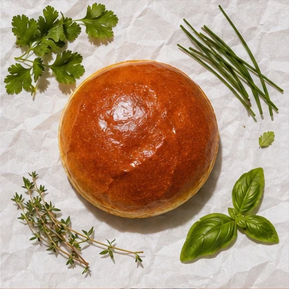

Antes da primeira mordida

A parte de dentro do pão vai primeiro para a chapa. Quando pega cor, segura o molho sem perder a crocância.
A ordem da montagem
A carne ganha uma crosta fina na chapa. O queijo entra ainda no calor e amolece nas bordas.
No balcão entram o molho, a carne com queijo e a fatia de tomate. Só então a tampa de pão fecha o lanche.
Ver o Clássico de R$ 29